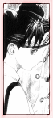

| » Teammates ;
Tenten - Tenten is adorable, but don't take her lightly just because she is a cute female. From what's revealed up till the 2nd arc, she neither uses ninjutsu nor genjutsu. She seems to primarily use the usual shinobi weapons. What's scary is her precision. She has pretty much a 100% accuracy rate, which implies that she never misses unless it's blocked. She has every kind of weapon imaginable, so it isn't a pretty sight when she uses all of them at once, and the opponent has about 100 weapons raining down on him/her. Tenten also utilizes thin, transparent threads to manipulate her weapons to her advantage. It's almost like she's a puppeteer, with her weapons as puppets. Lee's relationship with Tenten is a good one. While she cares for him, she doesn't express it gently. She's the kind who will shake a bruised and injured Lee awake instead of kindly waiting for him to come to. Since she's grown up with him and Neji, she knows him well enough to come to his aid first and lecture him on being an idiot later. While Tenten doesn't come out and say it, she has a lot of respect and admiration for Lee. She also knows what he's capable of, and doesn't underestimate him as Neji tends to do. Hyuga Neji - Neji is of the Hyuga clan, with an advanced bloodline called Byakugan. Neji's techniques attempt to destroy the enemy inside out, crushing their organs and stopping chakra and blood flow. Byakugan is a very powerful asset. Not only can Neji see a full 360° around him, he can also see certain chakre points in an opponent. If the opponent is struck in those chakra points, it can stop the chakra flow, thereby disabling him from doing any techniques. Neji comes from a complicated family. Aside from his sullen, collected, nonchalant attitude, he also looks down upon what he calls "losers," those that don't have any special abilities or those that just aren't talented enough. Among the 'losers' he perceives are Naruto and Hyuga Hinata, a direct descendant of the Hyuga clan. With Lee, Neji knows that Lee is strong. However, it's quite obvious that Neji doesn't think Lee stands a chance up against him, because he has never succeeded in beating Neji during training. However, he seemed to doubt this conclusion a bit when he saw Lee's fight with Gaara. Neji was surprised at many of Lee's moves, including this agility and power. Clearly, Neji had underestimated Lee's abilities, as he does Naruto and Hinata. Overall, Neji respects Lee as a hardworking teammate. « reverse |
PRELUDE GENERAL Naruto Terms Chakra LEE First Glance Personality Techniques Fighting Style Transition Weaknesses Analysis RIVALRY vs. Sasuke vs. Neji vs. Gaara vs. Sound vs. Kimimaro RELATIONS Maito Gai Teammates Sakura Naruto EXTRAS Symbolism Seiyuu Quotations References EDEN Reasons Images Wallpapers Fanworks Graphics EPILOGUE Updates Linkage Credits Joined Contact Guestbook |